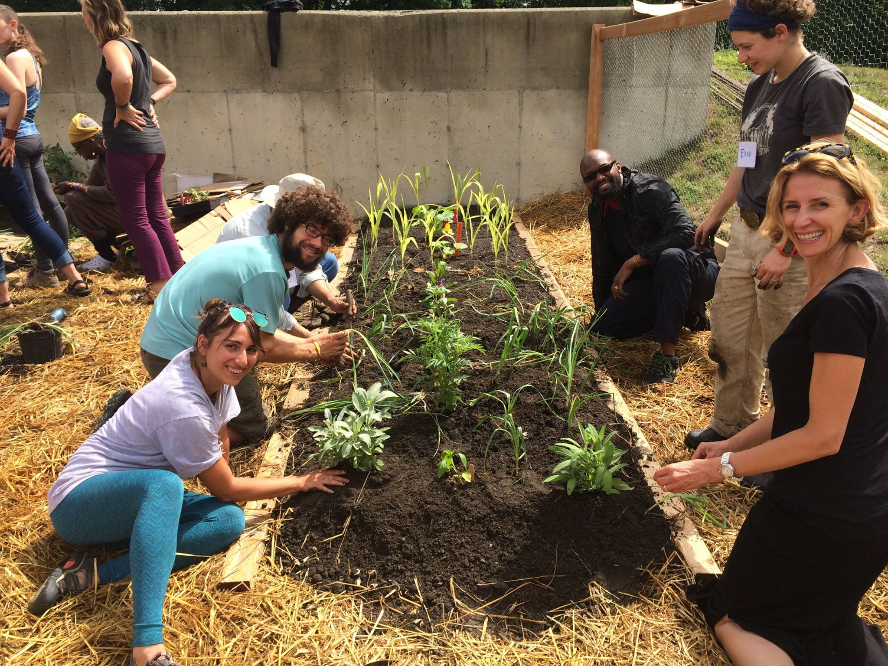

Grow Food Everywhere
In 2003-2006 there were gardens at 7 schools and at the Athol Memorial Hospital, then in 2011 we launched our Grow Food Everywhere for Health and Justice initiative. In 2012 we added gardens at the Orange Innovation Center, a converted factory, cared for by tenants and master gardener Pat Conrad, who brings food to the Orange Food Pantry. In addition, by the end of 2012, twenty low-income families received raised beds abundant with salad greens, tomatoes, cukes and beans. Then we created gardens at the local public library, the North Quabbin Community Co-op, and the Orange Food Pantry. A garden creation begins with the arrival of community resources: locally milled lumber, a truck filled with rich soil from Clearview Compost, and a crew of enthusiastic Seeds of Solidarity staff and sometimes volunteers.
Testimonials
“I’m diabetic, my 14 year old son is pre-diabetic, and my 9 year old daughter is gluten free…being able to provide a variety of fresh vegetables to both my children is not only a benefit financially but helps me meet my personal goal of opening the door to the wonderful world of fresh, clean foods to my children.”
“I don’t have the money to buy fresh foods…a great benefit of the garden is having fresh foods for my children that are not filled with chemicals from mass producers.”
“Patients were really thrilled to have the opportunity to pick their vegetables right after seeing a doctor or nutritionist. I’d often take them out to the gardens with a bag, and off they’d go. We have a lot of folks with great need and they were very happy to be able to get some extra food…and I was happy to be able to give them vegetables rather than pop-tarts.”Mary Sieruta MS, Registered Dietician, Community Health Center of Franklin County
Seeds of Solidarity


165 Chestnut Hill Rd
Orange, Massachusetts
01364-1078
Phone: (978) 544-9023